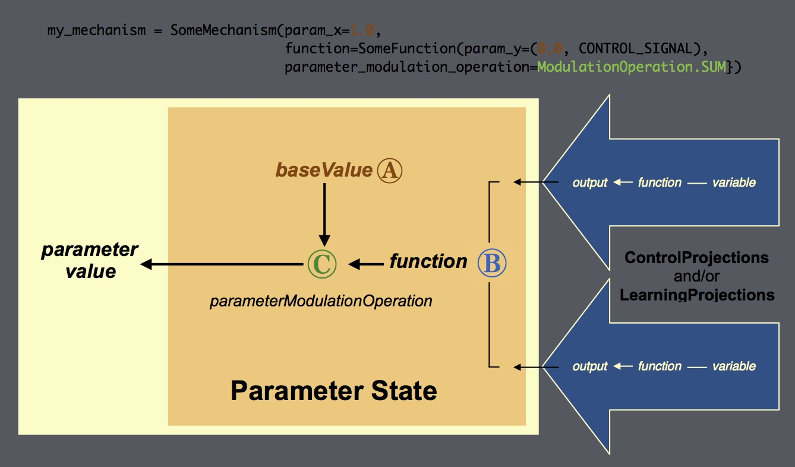

ParameterState¶
Overview¶
A parameterState belongs to either a mechanism or a MappingProjection, and is used to represent and
possibly modify the value of a parameter of its owner or it owner’s function. It can receive one or more
ControlProjections and/or LearningProjections that modify that
parameter. The projections received by a parameterState are listed in its
receivesFromProjections attribute.
Its function combines the values of these inputs, and uses the result to modify the value
of the parameter for which it is responsible.
Creating a ParameterState¶
A parameterState can be created by calling its constructor, but in general this is not necessary or advisable as
parameterStates are created automatically when the mechanism or projection to which they belong is created. The
owner of a parameterState must be a mechanism or MappingProjection. If the
owner is not explicitly specified, and can’t be determined by context, the parameterState
will be assigned to the DefaultProcessingMechanism. One parameterState is created for each configurable
parameter of its owner, as well as for each parameter that has been specified for that component’s function.
Each parameterState is created using the specification of the parameter for which it is responsible, as described below.
Specifying Parameters¶
Parameters can be specified in one of several places:
- In the argument for the parameter of the constructor for the component to which the parameter belongs (see Component_Specifying_Functions_and_Parameters for additional details).
- In a parameter dictionary used to specify the
paramsargument in the constructor for the component to which the parameter belongs. The entry for each parameter must use the keyword for the parameter as its key, and the parameter’s specification as its value (see examples below). Parameters for a component’sfunctionmust be specified in an entry with the keyFUNCTION_PARAMS, the value of which is a parameter dictionary containing an entry for each of the function’s parameters to be specified. When a value is assigned to a parameter in a parameter dictionary, it overrides any value assigned to the argument for the parameter in the component’s constructor.
- By direct reference to the corresponding attribute of the component to which the parameter belongs. The attribute always has the same name as the parameter and can be referenced using standard python attribute notation (e.g., myComponent.paramter_name).
- In the
assign_paramsmethod for the component.
The value specified for the parameter (either explicitly or by default) is assigned as the parameterState’s
baseValue, and any projections assigned to it are added to its
receiveFromProjections attribute. When the parameterState’s owner is
executed, the parameterState’s baseValue is combined with the value of the projections
it receives to determine the value of the parameter for which the parameterState is responsible
(see Execution for details).
The specification of a parameter can take any of the following forms:
- A value. This must be a valid value for the parameter. it creates a default parameterState, assigns the parameter’s default value as the parameterState’s
baseValue, and assigns the parameter’s name as the name of the parameterState.
A reference to an existing parameterState object. Its value must be a valid one for the parameter.
Note
This capability is provided for generality and potential future use, but its current use is not advised.
- A projection specification. This creates a default parameterState, assigns the parameter’s default value as the parameterState’s
baseValue, and assigns the parameter’s name as the name of the parameterState. It also creates and/or assigns the specified projection, and assigns the parameterState as the projection’sreceiver. The projection must be a ControlProjection or LearningProjection, and its value must be a valid one for the parameter.
A
ParamValueProjectionor 2-item (value, projection specification) tuple. This creates a default parameterState, uses the value (1st) item of the tuple as parameterState’sbaseValue, and assigns the parameter’s name as the name of the parameterState. The projection (2nd) item of the tuple is used to create and/or assign the specified projection, that is assigned the parameterState as itsreceiver. The projection must be a ControlProjection or LearningProjection, and its value must be a valid one for the parameter.Note
Currently, the
functionof a component, although it can be specified a parameter value, cannot be assigned a ControlProjection or a LearningProjection. This may change in the future.
The default value assigned to a parameterState is the default value of the argument for the parameter in the
constructor for the parameter’s owner. If the value of a parameter is specified as None, NotImplemented,
or any other non-numeric value that is not one of those listed above, then no parameter state is created and the
parameter cannot be modified by a ControlProjection
or LearningProjection.
Examples
In the following example, a mechanism is created with a function that has four parameters, each of which is specified using a different format:
my_mechanism = SomeMechanism(function=SomeFunction(param_a=1.0,
param_b=(0.5, ControlProjection),
param_c=(36, ControlProjection(function=Logistic),
param_d=ControlProjection)))
The first parameter of the mechanism’s function (param_a) is assigned a value directly; the second (param_b) is
assigned a value and a ControlProjection; the third (param_c) is assigned a value and a
ControlProjection with a specified function; and the fourth (param_d) is
assigned just a ControlProjection (the default value for the parameter will be used).
In the following example, a MappingProjection is created, and its
matrix parameter is assigned a random weight matrix (using a
matrix keyword) and LearningProjection:
my_mapping_projection = MappingProjection(sender=my_input_mechanism,
receiver=my_output_mechanism,
matrix=(RANDOM_CONNECTIVITY_MATRIX, LearningProjection))
Note
the matrix parameter belongs to the MappingProjection’s
function; however, since it has only one standard function,
its arguments are available in the constructor for the projection (see
Component_Specifying_Functions_and_Parameters for a more detailed explanation).
Structure¶
Every parameterState is owned by a mechanism or MappingProjection. It can receive one or more
ControlProjections or LearningProjections. However, the format (the
number and type of its elements) of each must match the value of the parameter for which the parameterState is
responsible. When the parameterState is updated (i.e., the owner is executed) the values of its projections are
combined (using the parameterState’s function) and the result is used to modify the
parameter for which the parameterState is responsible (see Execution below). The
projections received by a parameterState are listed in its receiveFromProjections attribute. Like all PsyNeuLink components, it has the three following core
attributes:
variable: this serves as a template for thevalueof each projection that the parameterState receives. It must match the format (the number and type of elements) of the parameter for which the parameterState is responsible. Any projections the parameterState receives must, it turn, match the format ofvariable.function: this performs an elementwise (Hadamard) aggregation of the values of the projections received by the parameterState. The default function isLinearCombinationthat multiplies the values. A custom function can be specified (e.g., to perform a Hadamard sum, or to handle non-numeric values in some way), so long as it generates a result that is compatible with thevalueof the parameterState.value: this is the value assigned to the parameter for which the parameterState is responsible. It is thebaseValueof the parameterState, modified by aggregated value of the projections received by the parameterState returned by the `function <ParameterState.function>.
In addition, a parameterState has two other attributes that are used to determine the value it assigns to the parameter for which it is responsible (as shown in the figure below):
baseValue: this is the default value of the parameter for which the parameterState is responsible. It is combined with the result of the parameterState’sfunctionto determine the value of the parameter for which the parameterState is responsible.
parameterModulationOperation: this determines how the result of the parameterState’sfunction(the aggregated values of the projections it receives) is combined with itsbaseValueto generate the value of the parameter for which it is responsible. This must be a value ofModulationOperation. It can be specified in either theparameter_modulation_operationargument of the parameterState’s constructor, or in itsparamsargument, in aPARAMETER_MODULATION_OPERATIONentry of a parameter dictionary. The default isModulationOperation.PRODUCT, which multiples the parameterState’sbaseValueby the aggregated value of the result of the parameterState’sfunctionto determine the value of the parameter.
All of the user-modifiable parameters of a component are listed in its user_params attribute,
which is a read-only dictionary with an entry for each parameter. The parameters of a component can be
modified individually by assigning a value to the corresponding attribute, or in groups using the component’s
assign_params method. The parameters for a component’s function
are listed in its function_params attribute, which is a read-only dictionary with an
entry for each of its function’s parameter. The parameters of a component’s function can be modified by
assigning a value to the corresponding attribute of the component’s function_object
attribute (e.g., myMechanism.function_object.my_parameter), or in a FUNCTION_PARAMS dict in assign_params.
The figure below shows how the specifications for a parameter are combined by its parameterState to determine the parameter’s value.
How a ParameterState Determines the Value of a Parameter

Component Impact of ParameterState on Parameter Value A (brown) baseValue(default value of the parameter)B (blue) parameterState’s functioncombinesvalueof projectionsC (green) parameterState’s parameterModulationOperationcombines projections andbaseValueIn example, the values for the parameters (shown in brown) –
param_xfor the mechanism, andparam_yfor itsfunction– specify thebaseValueof the paramterState for each parameter (labeled “A” in the figure). These are the values that will be used for those parameters absent any other influences. However,param_yis assigned a ControlProjection, so its value will also be determined by the value of the ControlProjection to its parameterState; that will be combined with itsbaseValueusing theparameterModulationOperationspecified for the mechanism (ModulationOperation.SUM, shown in green, and labeled “C” in the figure). If there had been more than one ControlProjection specified, their values would have been combined using the parameterState’sfunction(lableled “B” in the figure), before combining the result with the baseValue.
{kind=link}
Execution¶
A parameterState cannot be executed directly. It is executed when the mechanism to which it belongs is executed.
When this occurs, the parameterState executes any ControlProjections and/or LearningProjections it receives, and
calls its function to aggregate their values. It then combines the result with the
parameterState’s baseValue using its
parameterModulationOperation attribute,
and then assigns the result as the value of the parameterState. This is used as the value of
the parameter for which the parameterState is responsible.
Class Reference¶
-
class
ParameterState.ParameterState(owner, reference_value=None value=None, function=LinearCombination(operation=PRODUCT), parameter_modulation_operation=ModulationOperation.MULTIPLY, params=None, name=None, prefs=None)¶ Implements a subclass of States that represents and possibly modifies the value of a parameter for a mechanism, projection, or function.
Parameters: - owner (Mechanism or Projection) – the mechanism or projection to which to which the parameterState belongs; it must
be specified or determinable from the context in which the parameterState is created. The owner of a
parameterState for the parameter of a
functionshould be specified as the mechanism or projection to which the function belongs. - reference_value (number, list or np.ndarray) – specifies the default value of the parameter for which the parameterState is responsible.
- value (number, list or np.ndarray) – specifies the template for the parametersState’s
variable(since a parameterState’svariableandvalueattributes must have the same format (number and type of elements). - function (Function or method : default LinearCombination(operation=SUM)) – specifies the function used to aggregate the values of the projections received by the parameterState. It must produce a result that has the same format (number and type of elements) as its input.
- parameter_modulation_operation (ModulationOperation : default ModulationOperation.MULTIPLY) – specifies the operation by which the values of the projections received by the parameterState are used
to modify its
baseValuebefore assigning it as the value of the parameter for which the parameterState is responsible. - params (Optional[Dict[param keyword, param value]]) – a parameter dictionary that can be used to specify the parameters for the parameterState or its function, and/or a custom function and its parameters. Values specified for parameters in the dictionary override any assigned to those parameters in arguments of the constructor.
- name (str : default InputState-<index>) – a string used for the name of the inputState. If not is specified, a default is assigned by StateRegistry of the mechanism to which the inputState belongs (see Registry for conventions used in naming, including for default and duplicate names).
- prefs (Optional[PreferenceSet or specification dict : State.classPreferences]) – the
PreferenceSetfor the inputState. If it is not specified, a default is assigned usingclassPreferencesdefined in __init__.py (see PreferenceSet for details).
-
owner¶ Mechanism – the mechanism to which the parameterState belongs.
-
receivesFromProjections¶ Optional[List[Projection]] – a list of the projections received by the parameterState (i.e., for which it is a
receiver); generally these are ControlProjection(s) and/or LearningProjection(s).
-
variable¶ number, list or np.ndarray – the template for the
valueof each projection that the parameterState receives, each of which must match the format (number and types of elements) of the parameterState’svariable.
-
function¶ CombinationFunction : default LinearCombination(operation=PRODUCT)) – performs an element-wise (Hadamard) aggregation of the
valueof each projection received by the parameterState.
-
baseValue¶ number, list or np.ndarray – the default value for the parameterState. It is combined with the aggregated value of any projections it receives using its
parameterModulationOperationand then assigned tovalue.
-
parameterModulationOperation¶ ModulationOperation : default ModulationOperation.PRODUCT – the arithmetic operation used to combine the aggregated value of any projections is receives (the result of the parameterState’s
function) with itsbaseValue, the result of which is assigned tovalue.
-
value¶ number, list or np.ndarray – the aggregated value of the projections received by the ParameterState, combined with the
baseValueusing itsparameterModulationOperation. This is the value assigned to the parameter for which the parameterState is responsible.
-
name¶ str : default <State subclass>-<index> – the name of the inputState. Specified in the
nameargument of the constructor for the outputState. If not is specified, a default is assigned by the StateRegistry of the mechanism to which the outputState belongs (see Registry for conventions used in naming, including for default and duplicate names).Note
Unlike other PsyNeuLink components, states names are “scoped” within a mechanism, meaning that states with the same name are permitted in different mechanisms. However, they are not permitted in the same mechanism: states within a mechanism with the same base name are appended an index in the order of their creation.
-
prefs¶ PreferenceSet or specification dict : State.classPreferences – the
PreferenceSetfor the inputState. Specified in theprefsargument of the constructor for the projection; if it is not specified, a default is assigned usingclassPreferencesdefined in __init__.py (see PreferenceSet for details).
- owner (Mechanism or Projection) – the mechanism or projection to which to which the parameterState belongs; it must
be specified or determinable from the context in which the parameterState is created. The owner of a
parameterState for the parameter of a